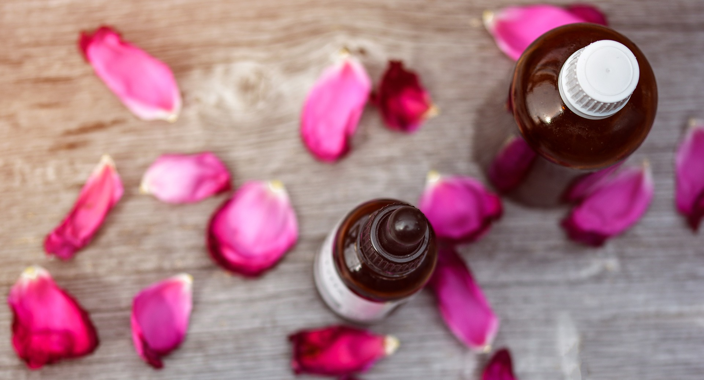
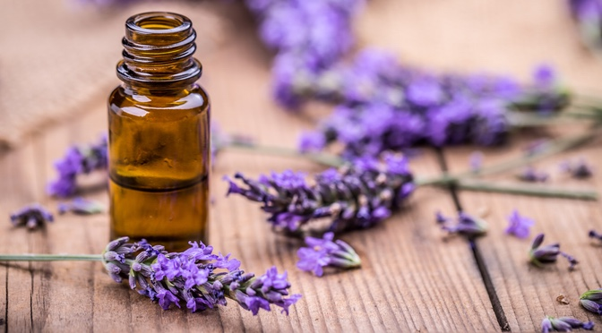
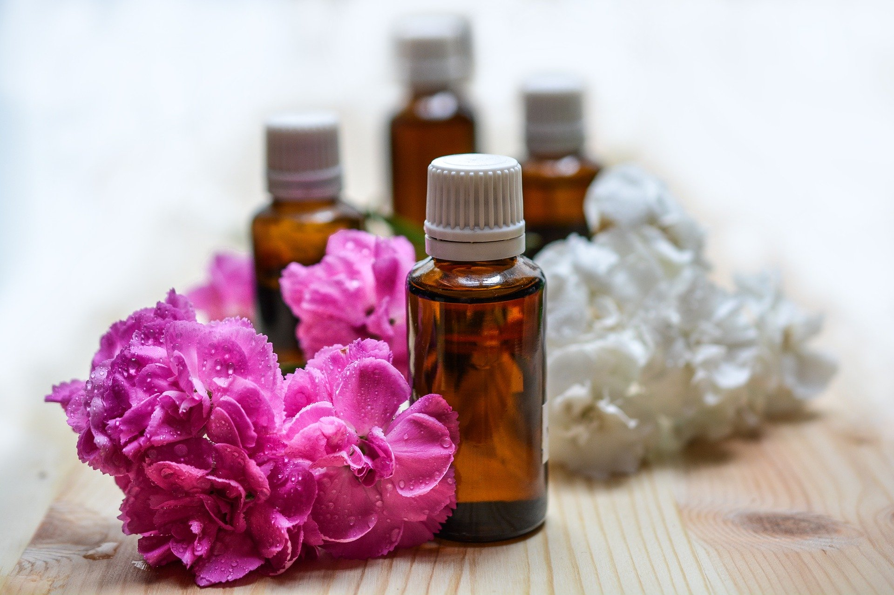

"Disease of the body itself is nothing but the result of the disharmony between soul and mind. Remove the disharmony, and we regain harmony between soul and mind, and the body is once more perfect in all its parts."
― Dr. Edward Bach
"Disease of the body itself is nothing but the result of the disharmony between soul and mind. Remove the disharmony, and we regain harmony between soul and mind, and the body is once more perfect in all its parts."
― Dr. Edward Bach
Life is full of ups and downs and we’re trying to master both.
My motto is “search for the solution not the problem”… for the problem is always there visible to us, what is hidden, however, is the solution.
I believe that both “The doctor” and “The patient” are within each of us and that my job is to awaken the doctor so that he could cure the patient.
I believe that each illness whether physical or mental is meant to draw our attention to the fact that something in the way we run our lives is not good for us. I convey this way of thinking to all my patients, those who seek relief for their body, mind and spirit.
I am here for you, but for myself as well, because I love and believe in what I do.
Blesings From Earth has been successfully disposing to his clients for many years, constantly searching for new knowledge and methods. As part of my business, I work on discovering the causes of your problems as well as eliminating them, with a great help of Bach Flower Remedies.
My successful formula is a combination of state of the mind, soul and body and individual approach to each client
All Bach flower essences are supplied at Stock Level so they can be diluted into a treatment bottle (as suggested by Dr Bach) or used directly from from the stock if preferred. When used individualy the act the best but for some life situations you need more than one remedy so it is good to make a combination of essences
You can combine up to seven different essences in the single treatment bottle.
It's easy to make your own Bach Flower Remedy combination. Just put 2 drops of each Remedy you require into a glass dropper bottle. Add up to 30ml of spring water plus a teaspoon of organic apple cider vinegar or brandy to act as a preservative.
Larch, Centaury, Rock Rose, Gentian, Elm, Pine
Mixture of this remedies brings assertiveness and inner strength when life's challenges have sapped motivation and esteem.
It brings a stronger sense of individuality & the ability to function with more integrity.
Indicated for: poor sense of self, belittling, apologetic, lack of confidence, powerlessness, inferiority, submissive, self-effacement, discouraged, valueless, self sacrificing.
Larch, Elm, White Chestnut, Hornbeam, Gentian, Clematis
Mixture of this remedies helps clear the head, in the self and bring a positive attitude to learning and academic work.
It can help focus the mind if under the pressure of deadlines.
Indicated for: exam formula, interviews, cramming, mental tiredness, overwhelmed, fear of failure, revision, distracted, fuzzy headed, mental chatter, uninspired.
Aspen, Mimulus, Cherry Plum, Rock Rose, Red Chestnut, Elm
Fear is one of the most powerful emotion.
It has a very strong effect on your mind and body.
What you’re afraid of and how you act when you’re afraid of something can vary per person. Just knowing what makes you afraid and why, can be the first step to sorting out problems with fear.
Aspen is remedy for fear of unknown, fear that doesn't have a name. When you are afraid but don't know afraid of what.
Mimulus is fear of known. Fear of going to the dentist, fear before exam
Cherry Plum is for fear of loosing control. When you are facing thoughts "I cannot take it any more, I reached my limit, I am gonna loose my control.".
Rock Rose is remedy for shock which leaves an inprint on your mind which keeps coming back. Needed after a big fall, incident, an event that shocked us. It is for violent shock, for terror.
Red Chestnut is remedy for fear for loving ones. Mother is fear for her child. Friend for other friend.
Elm is remedy for beeing overwhelmed. When too much is happening and you think you cannot handle everything. Too many projects, too many responsabilities.
Olive, Oak, White Chestnut
We all experience tiredness at times, which can be relieved by sleep and rest. Fatigue is when the tiredness is often overwhelming and isn't relieved by sleep and rest.
Combination of above remedies helps you to recharge yourself
How do they work? Olive is for physical fatigue, Oak for emotional fatigue and White Chestnut for mental fatigue.
